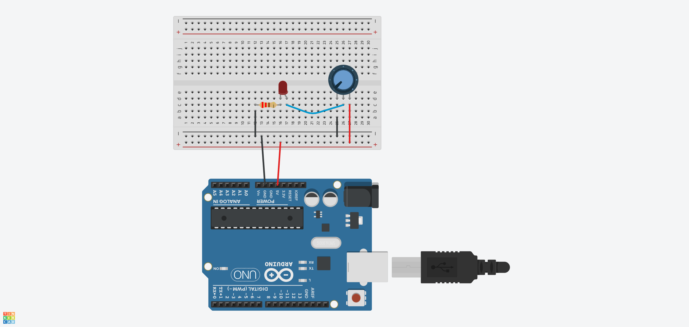

This experiment used a potentiometer to control the brightness of an LED. Turning the knob changes the voltage sent to the Arduino, which adjusts how bright the LED appears. It was our first time using analog input. I was a little confused about why the resistor was placed between the LED and Ground instead of the anywhere between the LED and the 5V source. Later, I came to understand the concept of current flowing consistently through a series circuit, and that the resistor can go either before or after the LED.